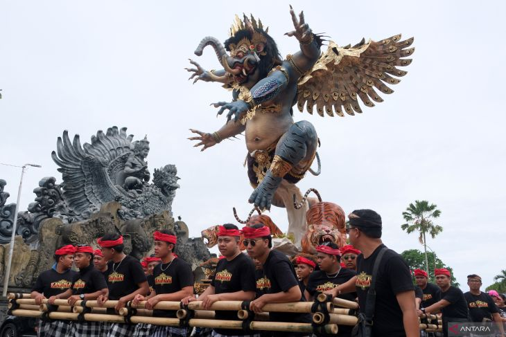
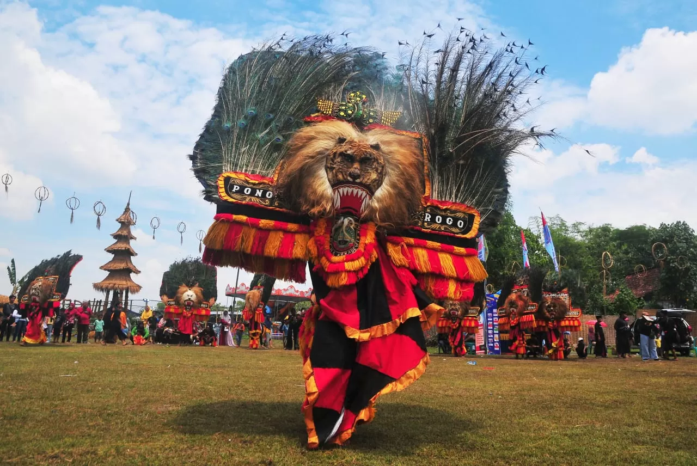
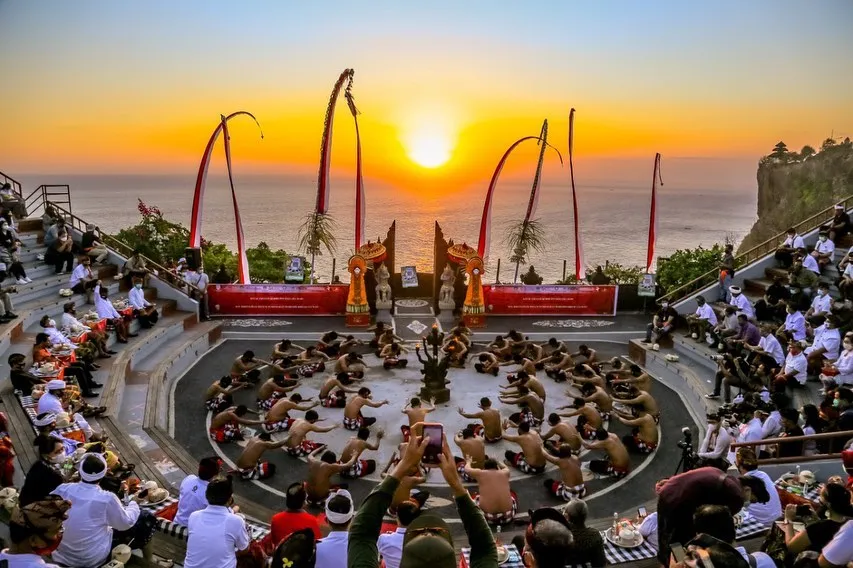
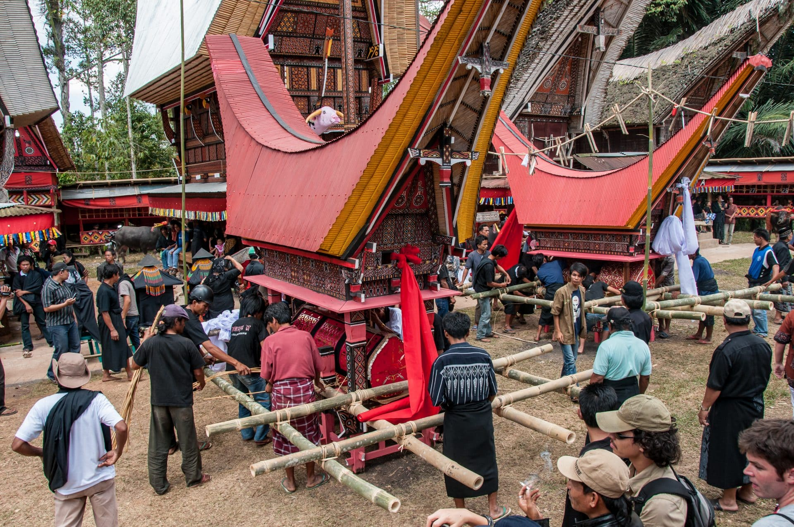

Kumpulan budaya dari berbagai daerah di Nusantara

Patung raksasa dari Bali yang diarak pada malam sebelum Nyepi sebagai simbol pelepasan energi negatif.
Lihat DetailMasakan dari Minangkabau dengan tekstur empuk, biasanya disajikan pada acara adat.
Lihat Detail
Seni pertunjukan tradisional Ponorogo yang terkenal dengan topeng besar dan tari singa barong.
Lihat Detail
Tarian tradisional Bali dengan gerakan tangan dan suara "cak" bersahut-sahutan.
Lihat Detail
Upacara pemakaman yang dilakukan oleh masyarakat Toraja secara turun-temurun.
Lihat Detail